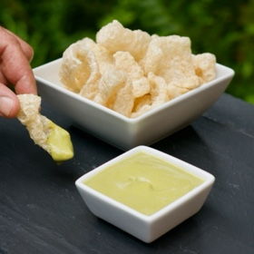

← All recipes
Creamy Jalapeno Sauce

Servings: Serves: 6 people at one sitting · Prep: 5 minutes · Cook: 25 minutes
Ingredients
- 5 jalapenos
- 3 cloves of garlic
- 1/2 teaspoon salt
- 2 tablespoons olive oil
Directions
- In a medium saucepan, place the jalapenos (stems snapped off) and peeled garlic cloves and cover with water.
- Bring to a boil, then reduce heat to medium high. After 15 minutes flip the jalapenos over, since they float they will only cook on one side. Cook for 25 minutes total or until jalapenos are tender and their color changes to a dull green.
- Remove the jalapenos and garlic from the pan and place in a blender. Add the salt and 1 tablespoon of the olive oil. Blend on low speed and work up to a high speed. Blend for 1 minute. Scrape down the sides of the blender, and test for thickness of the salsa. If it is too thick add the 2nd tablespoon of olive oil and blend till smooth and creamy on highest blender setting.
- Transfer to a squirt bottle for ease of use.
Notes
Note: Store in the refrigerator. It will keep for 10 days. We like it on eggs, on our fish, really any and everything.
Original source: juliestaste.com